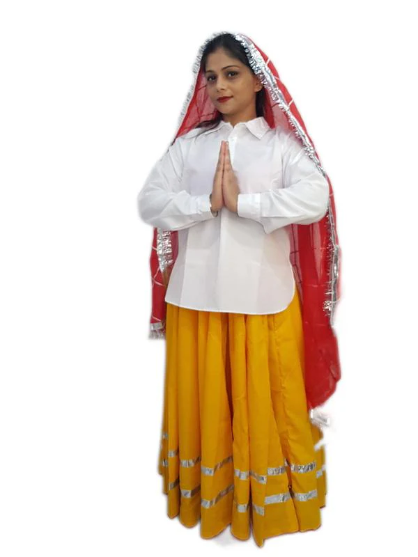

Ghagra-Choli:
Ghagra-Choli is a traditional garment of Haryana women. The Ghagra is a long, flared skirt, and the Choli, for this style, is a fitting blouse. This costume is usually stitched with beautiful embroidery, mirror work, and vibrant colors, giving a happy spirit to the Haryanvi culture. The dupatta again is a graceful drape over the shoulder. They make them look beautiful. At the same time, they also feel comfortable.